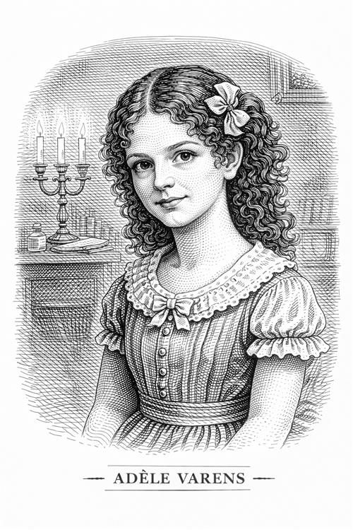

Adèle Varens

Es la pupila de Edward Rochester. Una niña de unos siete u ocho años, hija de Céline Varens, una bailarina de ópera francesa con la que Rochester tuvo un romance complicado.
Personalidad e impacto en la vida de Jane
Cuando Jane llega a Thornfield, Adèle es una niña algo mimada (le encantan los vestidos, los regalos y las cosas bonitas), vivaz, coqueta, parlanchina y profundamente "francesa" según los estereotipos de la época. No es mala, ya que es obediente y cariñosa, pero está acostumbrada a que todo el mundo la adore y a salirse con la suya. Su comportamiento es algo teatral debido a su educación en un ambiente artístico; tiene una actitud algo superficial y vana debido a la educación que recibió de su madre.
Adèle es la primera alumna de Jane. A través de ella, Jane demuestra su capacidad como maestra y su paciencia. Jane no intenta "romper" el espíritu de Adèle, sino encauzar su energía hacia algo más sólido y disciplinado.
La niña es el tema de conversación constante entre Jane y Rochester. Es a través de la historia de Adèle que Rochester comienza a abrir su corazón a Jane, confesándole sus errores pasados.
Jane llega a quererla profundamente, no como una empleada, sino casi como una hermana mayor. Al final de la novela, se asegura de que Adèle reciba una buena educación en una escuela adecuada, eliminando los rasgos de vanidad heredados de su madre.
Importancia del personaje
Adèle representa la responsabilidad moral. Rochester duda de si es su hija biológica (cree que no lo es), pero aun así se hace cargo de ella. Ella es el recordatorio vivo de los errores de juventud de Rochester.
Para Jane, Adèle es la oportunidad de dar la educación amorosa y firme que ella misma nunca recibió en Gateshead. La niña es una hoja en blanco, ya que aunque proviene de un entorno que la sociedad victoriana consideraría pecaminoso o corrupto, se convierte en una joven virtuosa y agradable gracias a la ayuda de su mentora. Es la prueba de que el entorno y la educación pueden vencer a la herencia.